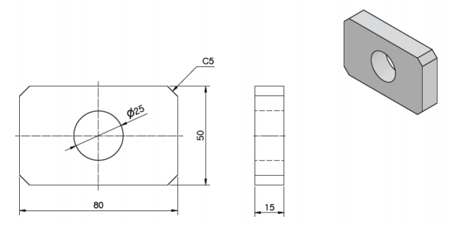
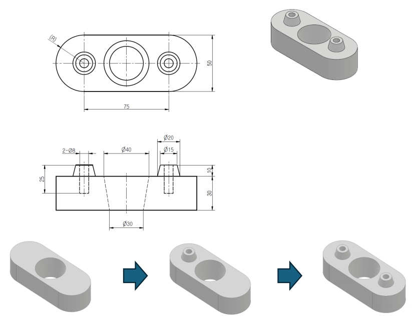

[18차시] 부품 모델링 실습
부품 모델링
실습 예제_01 — 중앙 홀 모따기 플레이트 (난이도 ★☆☆☆☆)
- 핵심 기능:
중심 직사각형 · 원(C) · 돌출(E) · 모따기(Chamfer)



💡 실습 따라하기: 단계별 모델링 상세 가이드
- [1단계] 작업 평면 선택 및 중심 직사각형 스케치
- 상단 메뉴의 [스케치 작성(Create Sketch)] 을 누르고 XY 평면(Top/윗면) 을 선택합니다.
- 단축키
R(직사각형) 실행 후 우측 스케치 팔레트에서 [중심 직사각형(Center Rectangle)] 아이콘을 클릭합니다. - 원점(0,0)을 클릭한 뒤 가로
80 mm입력,Tab키를 눌러 세로50 mm를 입력하고Enter를 누릅니다.
- [2단계] 중앙 관통 홀 스케치 및 완전 구속 확인
- 단축키
C(원) 를 누르고 직사각형 중심(원점)을 클릭한 뒤 지름25 mm(Ø25)를 입력합니다. - 모든 스케치 선이 파란색에서 검은색(완전 구속) 으로 변했는지 확인한 뒤 상단 우측 [스케치 마무리(Finish Sketch)] 를 클릭합니다.
- 단축키
- [3단계] 3D 돌출(Extrude) 피처 생성
- 단축키
E(돌출) 를 누르고, 중앙 원을 제외한 바깥 직사각형 영역(프로파일)을 선택합니다. - 거리(Distance) 입력창에
15 mm를 입력하고, 작업(Operation)이 [새 본체(New Body)] 로 설정된 것을 확인한 뒤확인을 누릅니다.
- 단축키
- [4단계] 외곽 4개 수직 모서리 모따기(Chamfer) 적용
- 상단 메뉴의 [수정(Modify)] → [모따기(Chamfer)] 를 클릭합니다.
- 직육면체의 세로 모서리 4개를 차례로 클릭하여 선택합니다.
- 도면의
C5표기대로 거리값에5 mm를 입력하고확인을 누르면 모델링이 완성됩니다.
- [1단계] 작업 평면 선택 및 중심 직사각형 스케치
실습 예제_02 — L자형 브래킷 (난이도 ★☆☆☆☆)
- 핵심 기능:
선(L) 또는 직사각형 · 돌출(E) · 모깎기(F) · 모따기(Chamfer)


💡 실습 따라하기: 단계별 모델링 상세 가이드
- [1단계] 측면(정면) 작업 평면 선택 및 L자형 스케치
- 상단 [스케치 작성] 클릭 후 XZ 평면(Front/정면) 을 선택합니다.
- 단축키
L(선) 을 사용해 원점(0,0)을 좌측 하단 코너로 두고 L자 모양의 윤곽선을 대략적으로 닫힌 형태로 그립니다.
- [2단계] 치수(D) 입력 및 완전 구속 정의
- 단축키
D(치수) 를 누르고 다음 치수를 순서대로 입력합니다:- 전체 밑면 가로 길이:
80 mm - 전체 수직 높이:
60 mm - 수직 벽의 두께:
25 mm - 바닥 판의 두께:
25 mm
- 전체 밑면 가로 길이:
- 모든 선이 검은색(완전 구속) 으로 바뀐 것을 확인하고 [스케치 마무리] 를 누릅니다.
- 단축키
- [3단계] 3D 돌출(Extrude) 피처 생성
- 단축키
E(돌출) 를 실행하고 L자 프로파일을 클릭합니다. - 거리값에
15 mm를 입력하고확인을 누릅니다. (필요 시 방향을 '대칭'으로15 mm돌출해도 무방합니다.)
- 단축키
- [4단계] 안쪽 모서리 모깎기(Fillet) 및 바깥 모서리 모따기(Chamfer)
- 모깎기: 단축키
F를 누르고 안쪽 직각 꺾임 모서리를 클릭한 뒤 반지름10 mm(R10) 을 입력하고확인을 누릅니다. - 모따기: [수정] → [모따기] 를 실행해 바깥쪽 3개 모서리(상단, 하단 끝 모서리들)를 선택하고
5 mm(C5) 를 적용해 완성합니다.
- 모깎기: 단축키
- [1단계] 측면(정면) 작업 평면 선택 및 L자형 스케치
실습 예제_03 — 이니셜 키링 네임택 (난이도 ★★☆☆☆)
- 핵심 기능:
중심점 슬롯 · 간격띄우기(O) · 원(C) · 텍스트 · 돌출(E)


💡 실습 따라하기: 단계별 모델링 상세 가이드
- [1단계] 바닥 평면 선택 및 중심점 슬롯(Slot) 작성
- 상단 [스케치 작성] → XY 평면(Top) 을 선택합니다.
- [작성(Create)] → [슬롯(Slot)] → [중심점 슬롯(Center to Center Slot)] 을 선택합니다.
- 원점을 첫 번째 중심으로 클릭하고, 수평 방향으로
40 mm떨어진 지점을 두 번째 중심으로 클릭한 뒤, 전체 폭(지름)을20 mm로 입력합니다.
- [2단계] 내부 간격띄우기(Offset) 및 고리 원 스케치
- 단축키
O(간격띄우기) 를 누르고 슬롯 외곽선을 클릭한 뒤, 안쪽으로-2.5 mm를 입력하여 내부 슬롯 림을 생성합니다. - 단축키
C(원) 를 누르고 좌측 슬롯 중심에서 바깥쪽으로12.5 mm떨어진 위치에Ø10외경 원과Ø5내경 구멍 원을 동심원으로 그립니다. - 불필요한 교차선은 단축키
T(자르기) 로 정리하거나 폐곡선 프로파일을 유지한 채 [스케치 마무리] 합니다.
- 단축키
- [3단계] 키링 베이스 프레임 돌출
- 단축키
E(돌출) 를 실행하고 슬롯 외곽 림 영역과 고리 영역 프로파일을 선택합니다. - 높이
5 mm를 입력하고확인을 누릅니다.
- 단축키
- [4단계] 텍스트 작성 및 결합 돌출(Join)
- 슬롯 바닥 평면(또는 베이스 윗면)에 새 스케치를 생성합니다.
- [작성] → [텍스트(Text)] 를 실행하여 슬롯 내부 영역에 텍스트 상자를 드래그합니다.
- 텍스트 창에 본인 이니셜 또는
JIS를 입력하고, 글꼴Arial Black, 높이16 mm로 설정한 뒤 글자가 슬롯 좌우 테두리에 겹치도록 배치하고 [스케치 마무리] 합니다. - 단축키
E로 텍스트 글자들을 선택하고 높이5 mm, 작업은 [접합(Join)] 으로 설정하여 하나로 일체화합니다.
- [1단계] 바닥 평면 선택 및 중심점 슬롯(Slot) 작성
실습 예제_04 — 삼각 프리즘 지지대 (난이도 ★★★☆☆)
- 핵심 기능:
슬롯 · 원(C) · 대칭 돌출 · 돌출(절단)


💡 실습 따라하기: 단계별 모델링 상세 가이드
- [1단계] 바닥 슬롯 베이스 스케치 및 돌출
- [스케치 작성] → XY 평면(Top) 선택.
- [작성] → [슬롯] → [중심 대 중심 슬롯] 으로 원점을 중심에 두고 두 원호 중심 사이 거리
90 mm, 폭40 mm슬롯을 그립니다. - 슬롯 양쪽 중심점에 단축키
C로 각각Ø15관통 홀 2개를 그립니다. - [스케치 마무리] 후 단축키
E(돌출) 로 원 내부를 뺀 슬롯 면을10 mm돌출합니다.
- [2단계] 정면(XZ) 평면에 삼각 리브 스케치 및 대칭 돌출
- [스케치 작성] → 원점 기준 XZ 평면(정면) 을 선택합니다.
- 단축키
L(선) 으로 바닥 베이스 윗면을 밑변으로 하고 높이50 mm인 이등변 삼각형을 그립니다. (원점 축을 기준으로 좌우 대칭 구속) - [스케치 마무리] 후 단축키
E실행:- 방향(Direction): [대칭(Symmetric)]
- 측정(Measurement): [전체 길이(Whole Length)] 선택 후
65 mm입력 - 작업(Operation): [접합(Join)] 선택 후
확인을 누릅니다.
- [3단계] 측면(YZ) 평면에서 상단 직사각형 홈 절단(Cut)
- [스케치 작성] → YZ 평면(우측면) 선택.
- 단축키
R로 삼각 프리즘 상단 꼭짓점을 통과하는 가로 폭30 mm, 깊이20 mm직사각형을 스케치합니다. - [스케치 마무리] 후 단축키
E실행:- 방향: [대칭], 거리: [모두(All/관통)]
- 작업: [절단(Cut)] 을 선택하고
확인을 누르면 상단 U자 홈이 깨끗하게 가공됩니다.
- [1단계] 바닥 슬롯 베이스 스케치 및 돌출
실습 예제_05 — 3홀 링크 암 (난이도 ★★★☆☆)
- 핵심 기능:
원(C) · 접선 구속조건 · 3점 호 · 대칭 돌출


💡 실습 따라하기: 단계별 모델링 상세 가이드
- [1단계] 기준 평면 선택 및 3쌍의 동심원 스케치
- [스케치 작성] → XY 평면(Top) 선택.
- 좌측 하단 구멍을 원점(0,0)으로 잡고 동심원
Ø20/Ø10을 그립니다. - 원점에서 수직 위로
30 mm떨어진 위치에 동심원Ø20/Ø10을 그립니다. - 원점에서 수평 오른쪽으로
30 mm떨어진 위치에 동심원Ø25/Ø15를 그립니다. - 단축키
D로 중심 간 거리 `30mm`를 정확히 입력해 위치를 완전 구속합니다.
- [2단계] 3점 호(Arc) 및 접선(Tangent) 구속조건 부여
- [작성] → [호] → [3점 호(3-Point Arc)] 로 바깥쪽 원들의 둘레를 연결하는 호 3개를 그립니다:
- 위쪽 원과 오른쪽 원 사이 바깥 호: 반지름
R25 - 위쪽 원과 원점 원 사이 안쪽 호: 반지름
R12 - 원점 원과 오른쪽 원 사이 안쪽 호: 반지름
R10
- 위쪽 원과 오른쪽 원 사이 바깥 호: 반지름
- 상단 구속조건 도구에서 [접선(Tangent)] 을 선택해, 그린 모든 호와 원이 만나는 접점마다 부드럽게 이어지도록 접선 구속을 부여합니다. (선이 모두 검은색으로 변해야 함)
- [작성] → [호] → [3점 호(3-Point Arc)] 로 바깥쪽 원들의 둘레를 연결하는 호 3개를 그립니다:
- [3단계] 스케치 공유를 활용한 다단계 대칭 돌출
- [스케치 마무리] 후 단축키
E를 실행합니다. - 먼저 우측 하단 가장 두꺼운 보스 영역을 선택하고, 방향: [대칭], 전체 두께:
20 mm로 돌출합니다. - 좌측 브라우저에서 [스케치] 폴더를 펼친 뒤, 방금 끈 스케치의 눈(👁️) 아이콘을 켜 가시성을 복원합니다.
- 다시 단축키
E로 나머지 암(Arm) 연결부 프로파일들을 선택하고, 방향: [대칭], 전체 두께:10 mm, 작업: [접합(Join)] 으로 돌출하면 단차가 있는 정교한 링크 암이 완성됩니다.
- [스케치 마무리] 후 단축키
- [1단계] 기준 평면 선택 및 3쌍의 동심원 스케치
실습 예제_06 — 키홈 플랜지 허브 (난이도 ★★★★☆)
- 핵심 기능:
회전(Revolve) 또는 돌출 · 돌출(절단) · 구멍(H, 카운터보어 ISO M6) · 원형 패턴

💡 실습 따라하기: 단계별 모델링 상세 가이드
- [1단계] 회전(Revolve)용 반단면 프로파일 스케치
- [스케치 작성] → XZ 평면(정면) 선택.
- 회전 중심축이 될 수직 기준선(Z축)을 포함하여 계단형 반단면을 단축키
L(선) 로 스케치합니다:- 중심 관통 구멍 반지름:
10 mm(지름Ø20) - 원통 허브 외경 반지름:
17.5 mm(지름Ø35), 허브 총 길이:70 mm - 플랜지 외경 반지름:
35 mm(지름Ø70), 플랜지 판 두께:20 mm
- 중심 관통 구멍 반지름:
- [스케치 마무리] 후 상단 [작성] → [회전(Revolve)] 실행:
- 프로파일: 계단 단면 선택, 축(Axis): Z축(수직 중심선) 선택, 각도:
360°적용.
- 프로파일: 계단 단면 선택, 축(Axis): Z축(수직 중심선) 선택, 각도:
- [2단계] 허브 측면 키홈(Keyway) 절단 가공
- [스케치 작성] → 원통 허브 앞면(XY 평면)을 선택합니다.
- 중심에서 위쪽으로 폭
10 mm, 구멍 상단에서 위로5 mm(원점 중심 기준 높이15 mm) 돌출되는 직사각형 키홈을 그립니다. - [스케치 마무리] 후 단축키
E로 키홈 영역을 선택하고, 플랜지 시작면까지 안쪽으로-50 mm절단(Cut) 돌출합니다.
- [3단계] 카운터보어 구멍(Hole) 생성 및 원형 패턴 배열
- [스케치 작성] → 플랜지 앞면을 클릭하고, 지름
Ø55구성선(PCD 원) 을 그린 뒤 상단 수직선과 만나는 사분점에 점(Point) 1개를 찍고 스케치를 마칩니다. - 단축키
H(구멍) 실행 후 방금 찍은 점을 선택합니다:- 구멍 유형: [카운터보어(Counterbore)]
- 규격: [ISO], 패스너: [소켓 머리 캡 나사 (ISO 4762)], 크기:
M6선택 - (자동 입력 치수: 큰 머리 지름
Ø11깊이6.8 mm, 관통 홀 지름Ø6.6 mm관통)
- [작성] → [패턴] → [원형 패턴(Circular Pattern)] 실행:
- 객체 유형: [피처(Features)] 선택 후 타임라인의 구멍 피처 클릭
- 축: 원통 중심축 선택, 수량:
3개입력 후확인을 누릅니다.
- [스케치 작성] → 플랜지 앞면을 클릭하고, 지름
- [1단계] 회전(Revolve)용 반단면 프로파일 스케치
실습 예제_07 — 테이퍼 보스 플레이트 (난이도 ★★★★☆)
- 핵심 기능:
슬롯 · 돌출(E) · 로프트(Loft) 또는 기울기(Draft) · 구멍(H) · 미러


💡 실습 따라하기: 단계별 모델링 상세 가이드
- [1단계] 바닥 슬롯 베이스 스케치 및 돌출
- [스케치 작성] → XY 평면(Top) 선택.
- [작성] → [슬롯] → [중심 대 중심 슬롯] 으로 중심 거리
75 mm, 폭50 mm슬롯을 원점을 중심에 맞춰 그립니다. - [스케치 마무리] 후 단축키
E로 높이30 mm돌출합니다.
- [2단계] 중앙 테이퍼 관통 구멍 로프트(Loft) 절단
- 윗면 스케치: 베이스 윗면을 클릭하고 원점에 단축키
C로Ø40원을 스케치하고 마칩니다. - 아랫면 스케치: 화면을 돌려 베이스 아랫면을 클릭하고 원점에
Ø30원을 스케치하고 마칩니다. - 상단 [작성] → [로프트(Loft)] 를 실행하여 윗면
Ø40원과 아랫면Ø30원 프로파일을 순서대로 선택하고, 작업: [절단(Cut)] 을 선택해 원뿔형 테이퍼 홀을 파냅니다. - (대안 기법: 윗면에 Ø40 원을 관통 절단 돌출한 뒤, [수정] → [기울기(Draft)]로 내벽에 각도를 주어도 동일합니다.)
- 윗면 스케치: 베이스 윗면을 클릭하고 원점에 단축키
- [3단계] 간격띄우기 평면(Offset Plane) 생성 및 좌측 테이퍼 보스 로프트
- 베이스 윗면 좌측 슬롯 중심(원점에서 좌측으로
37.5 mm)에Ø20원을 스케치합니다. - [구성(Construct)] → [간격띄우기 평면(Offset Plane)] 을 선택하고, 베이스 윗면에서 위로
10 mm띄운 작업 평면을 만듭니다. - 새로 만든 평면에 스케치를 생성하고, 동일 중심에
Ø15원을 그리고 마칩니다. - [로프트(Loft)] 를 실행하여
Ø20원과Ø15원을 연결해 작업: [접합(Join)] 으로 위로 솟아오른 보스를 만듭니다.
- 베이스 윗면 좌측 슬롯 중심(원점에서 좌측으로
- [4단계] 볼트 홀 가공 및 대칭 미러(Mirror) 복사
- 보스 윗면에 단축키
H(구멍) 로 중심에 지름Ø8 mm, 깊이25 mm구멍을 뚫습니다. - 상단 [작성] → [미러(Mirror)] 를 실행합니다:
- 패턴 유형: [피처(Features)] 선택 후 하단 타임라인에서 방금 만든 '로프트 보스'와 '구멍' 피처를 다중 선택합니다.
- 미러 평면: 모델의 중심면인 YZ 평면을 선택하고
확인을 누르면 우측에 대칭 복사되어 완성됩니다.
- 보스 윗면에 단축키
- [1단계] 바닥 슬롯 베이스 스케치 및 돌출
실습 예제_08 — 45° 경사 V-블록 (난이도 ★★★★★)
- 핵심 기능:
돌출(E) · 기울어진 평면(45°) · 돌출(절단) · 구멍(H, 카운터보어)

💡 실습 따라하기: 단계별 모델링 상세 가이드
- [1단계] 기준 직육면체 블록 스케치 및 돌출
- [스케치 작성] → XY 평면(Top) 선택.
- [중심 직사각형]으로 가로
95 mm, 세로50 mm를 원점 대칭으로 그립니다. - [스케치 마무리] 후 단축키
E로 높이45 mm돌출하여 직육면체 덩어리를 생성합니다.
- [2단계] 45° 기울어진 작업 평면(Plane at Angle) 생성
- 상단 메뉴 [구성(Construct)] → [기울어진 평면(Plane at Angle)] 을 선택합니다.
- 블록 상단의 가로 모서리를 클릭선으로 지정하고, 회전 각도에
45°(또는 `-45°`)를 입력하여 45도 경사 작업 평면을 만듭니다.
- [3단계] 경사 평면 위에 V홈 스케치 및 절단(Cut) 돌출
- 방금 만든 45° 경사 평면을 클릭하고 [스케치 작성] 을 누릅니다.
- 도면의 보조 투상도에 제시된 V홈 치수를 스케치합니다:
- 상단 개구부 폭:
50 mm - V자 협각:
90°(양쪽 45° 대칭) - 바닥 평평한 폭:
10 mm, 홈 깊이:30 mm
- 상단 개구부 폭:
- [스케치 마무리] 후 단축키
E로 프로파일을 선택하고, 블록 반대편까지 [모두(All)] 절단(Cut) 하여 45도 방향의 정밀 V블록 홈을 파냅니다.
- [4단계] 상단 카운터보어 체결 구멍 2개 가공
- 블록 윗면(수평면)을 클릭하고 [스케치 작성] 을 엽니다.
- 중심선 기준 좌우
60 mm간격(각각 중심에서 좌우로 `30 mm`, 앞쪽 모서리에서 `25 mm`) 위치에 점(Point) 2개를 찍고 스케치를 마칩니다. - 단축키
H(구멍) 실행 후 두 점을 선택합니다:- 카운터보어 머리 지름:
Ø15 mm, 머리 깊이:9 mm - 관통 홀 지름:
Ø9 mm, 범위: [모두(관통)] 설정 후확인을 누릅니다.
- 카운터보어 머리 지름:
- [1단계] 기준 직육면체 블록 스케치 및 돌출
실습 예제_09 — 경사 절곡 브래킷 (난이도 ★★★★★)
- 핵심 기능:
측면 프로파일 돌출 · 경사면 스케치 · 모깎기(F) · 돌출(접합/절단)

💡 실습 따라하기: 단계별 모델링 상세 가이드
- [1단계] 측면(정면) 평면에서 ㄷ자 절곡 판재 단면 스케치
- [스케치 작성] → XZ 평면(정면) 선택.
- 바닥 수평선 길이
90 mm, 좌측40°경사선(길이50 mm), 우측60°경사선(길이55 mm) 을 차례로 그립니다. - 단축키
O(간격띄우기) 로 전체 선을 위쪽으로 판 두께10 mm만큼 띄우고, 양쪽 끝단을 단축키L로 닫아 두께 `10 mm`의 ㄷ자 폐곡선 단면을 완성합니다. - [스케치 마무리] 후 단축키
E실행: 방향: [대칭], 전체 폭:50 mm로 돌출합니다.
- [2단계] 좌우 경사면 마감 (모깎기 및 슬롯/홀 가공)
- 좌측 경사면:
- 끝단 양쪽 모서리에 단축키
F(모깎기) 로R25를 적용해 완전한 반원형 라운드를 만듭니다. - 라운드 중심점에 단축키
H(구멍) 로 관통 구멍을 가공합니다.
- 끝단 양쪽 모서리에 단축키
- 우측 경사면:
- 끝단 모서리에
R10모깎기를 적용합니다. - 경사 윗면을 클릭해 [스케치 작성] 후 폭
12 mm, 깊이30 mmU자형 홈 슬롯을 그려 끝단까지 돌출(절단) 합니다.
- 끝단 모서리에
- 좌측 경사면:
- [3단계] 중앙 수평면 상·하부 원형 보스 접합 및 관통 홀 가공
- 상부 보스: 중앙 수평 윗면을 클릭하고 중심에 단축키
C로Ø40원을 그린 뒤 위로5 mm돌출(접합)합니다. - 하부 보스: 바닥 아랫면을 클릭하고 동심원
Ø40을 그려 아래로10 mm돌출(접합)하여 총 보스 높이25 mm(상부 5 + 판재 10 + 하부 10)를 맞춥니다. - 최종 관통 홀: 보스 윗면에 단축키
H를 실행하여 보스 중심에Ø20 mm전체 관통 홀을 뚫어 모델링을 완성합니다.
- 상부 보스: 중앙 수평 윗면을 클릭하고 중심에 단축키
- [1단계] 측면(정면) 평면에서 ㄷ자 절곡 판재 단면 스케치
✅ 18차시 부품 모델링 실습 체크리스트
- 예제 01~02 (기초): 직사각형·원·돌출·모깎기·모따기 완료
- 예제 03~05 (응용): 슬롯·간격띄우기·텍스트·대칭 돌출·접선 구속 완료
- 예제 06~07 (중급): 회전/로프트·카운터보어(
ISO 4762 M6)·원형 패턴·미러 완료 - 예제 08~09 (심화):
45°기울어진 작업 평면·경사면 절곡 스케치 완료 - 최종 확인: 모든 예제의 치수·관통 여부 확인 및 클라우드 저장(
Ctrl + S) 완료